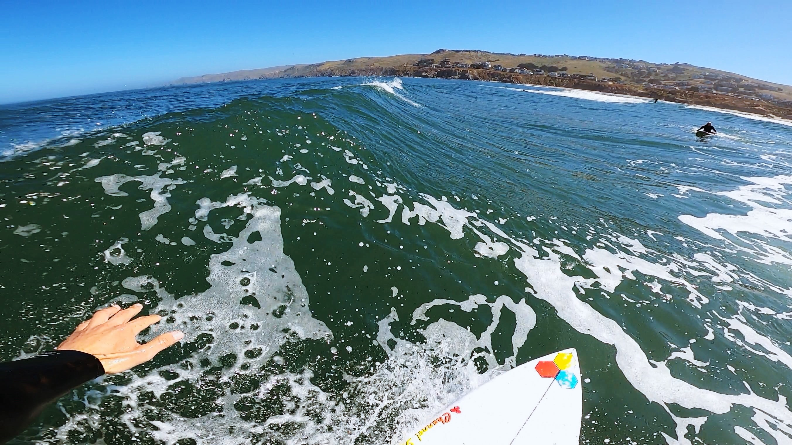

Dog Days
eccentric life during quarantine

Descending to a mysterious beach somewhere off Route One.
The Northern California coastline is superbly beautiful,
yet is characterized by an aura of authority.
Its cold, viridescent water composes powerful surf that strikes jagged rocks and slowly eats at the surrounding cliffs.
The cold nature of the nutrient-rich water produces exceptionally fat sea lions who curiously stare at you with their circular,
black eyes and dopey faces.

Water sprays from a quick cut.
Quarantine has dictated a redundant yet spacious lifestyle
and given me the opportunity to reflect with great care.
It is in these strange times that I have found both personal solace and joy in the purity of the ocean.
By motivating me to plunge into the numbing water, surfing has become the vessel in which I am able to enjoy such purity.
Paddling out at Dillon Beach.
Waves are like real life opportunities, if they presented themselves every twenty seconds.
Most of the times these opportunities are duds, lifeless mounds of water carelessly rolling past.
Occasionally, the wave is packed with potential and you are positioned to give this one your all.
If you seize the moment its yours, you own it, better make it look good.
If it slips by you, its gone forever. There will never be one quite like it, learn to let this one go because there are
always more on the way.

Lovely lovely left.
In reflection, I'm learning to accept whats out of my control
and recognize that the only thing in my control is how I spend my limited time. Learning to say no to the wasteful space, focusing
on myself and rediscovering my various passions. Many of the things I love doing, surfing, mountain biking, cooking I
regretfully set aside during college. I am happily reconnecting.
Rolly makes a long-legged friend.